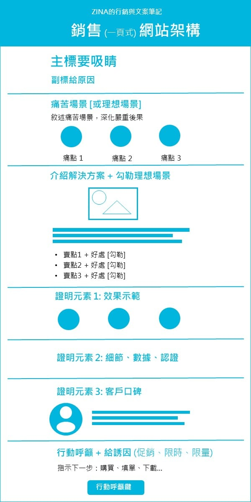

← 回到文章列表 業務行銷一頁式網站架構 [內容篇]2021-02-25·1 分鐘閱讀 整理給自己的小抄。除了第一 cut 和最後一 cut 外，中間的幾 cut，順序會依需求調整。我自己是會打開小抄，一面找資料，一面填寫到適合欄位。網路是時間黑洞，避免自己迷失在茫茫的資料海中啊。 
留言
這裡之後會接上第三方留言服務（如 Disqus / utterances / Giscus）。
讀者可以留言、回覆，資料由留言服務代管。